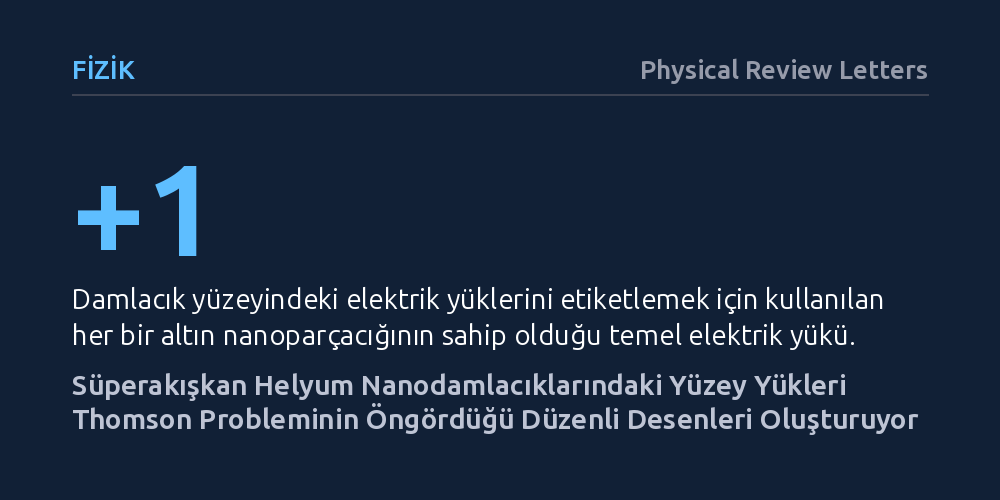

FIZIK · Physical Review Letters · 2026-10-27
Araştırmacılar, küresel yüzeydeki eş yüklerin en düşük enerjili dizilimini arayan Thomson probleminin gerçek uzaydaki gözlemlenebilirliğini inceledi. Süperakışkan helyum nanodamlacıklarındaki yükleri altın parçacıklarıyla etiketleyerek elektron mikroskobunda görüntüleyen ekip, yüklerin asgari enerji yapılarından eğrilik kaynaklı Coulomb kristalleşmesine kadar öngörülen geometrilere yerleştiğini kanıtladı.
Yüzyılı aşkın süredir yalnızca kuramsal ve sayısal hesaplamalarla incelenebilen küre üzerindeki elektrostatik yük dağılımı, süperakışkan helyum damlacıkları sayesinde ilk kez mikroskop altında doğrudan gözlemlenebilir bir fiziksel sisteme dönüştü.

1904 yılında fizikçi J. J. Thomson, atomun yapısını açıklamaya çalışırken temel bir soru ortaya attı: Bir kürenin yüzeyinde serbestçe dolaşabilen aynı işaretli elektrik yükleri, birbirlerini iterek en düşük enerji durumunda nasıl bir geometrik düzene yerleşir? İlk bakışta yalın bir elektrostatik sorusu gibi görünen bu problem, parçacık sayısı arttıkça olağanüstü bir matematiksel karmaşıklığa bürünür. Yükler arasındaki Coulomb itme kuvveti ile kürenin eğri yüzeyi arasındaki geometrik uyumsuzluk nedeniyle, problemin kesin analitik çözümü yalnızca birkaç küçük parçacık sayısı için hesaplanabilmiştir.
Daha fazla sayıda yük barındıran sistemlerde en kararlı denge noktalarını bulmak, modern bilgisayar simülasyonları için bile zorlu bir eniyileme problemidir. Küresel eğrilik, düzlemde kusursuz altıgen yapılar oluşturan parçacık örgüsünü bozar ve kaçınılmaz olarak topolojik kusurların belirmesine yol açar. Yıllar boyunca virüs kılıflarından polimer keseciklerine kadar pek çok alana ilham veren bu klasik problem, yüklerin küresel bir yüzeyde serbestçe dağılıp dengelenebileceği ideal bir deneysel platform bulunamadığı için doğrudan gözlemlenememişti.
Araştırma ekibi, bu köklü teorik problemi deneysel olarak somutlaştırmak amacıyla süperakışkan helyum nanodamlacıklarını kullandı. Mutlak sıfıra yakın sıcaklıklarda süperakışkan faza geçen bu sıvı helyum damlacıkları, viskozitenin tamamen sıfırlandığı sürtünmesiz bir ortam sağlar. Bu özellik sayesinde damlacık yüzeyindeki elektrik yükleri hiçbir dirençle karşılaşmadan serbestçe hareket edebilir ve birbirlerini iterek en düşük enerjili en kararlı geometrik konfigürasyona kendiliğinden yerleşebilir.
Yüzeydeki tekil elektrik yüklerini mikroskop altında görünür kılmak için tek yüklü altın nanoparçacıkları etiketleme amacıyla kullanıldı. Altın parçacıkları damlacık yüzeyindeki yüklerin bulunduğu noktalara tutunarak onların konumunu sabitledi. Ardından bu nanodamlacıklar bir hedef yüzeye çarptırıldı ve geçirimli elektron mikroskobu (TEM) ile altın parçacıklarının bıraktığı izler kaydedildi. Böylece araştırmacılar, küresel bir yüzey üzerindeki yük dağılımını gerçek uzayda doğrudan görüntülemeyi başardı.
Elektron mikroskobu izlerinin incelenmesi, yüklerin küre üzerinde Thomson probleminin matematiksel modelleriyle kusursuz biçimde örtüşen desenler oluşturduğunu ortaya koydu. Az sayıda yük içeren küçük sistemlerde parçacıklar, kuramsal olarak öngörülen en düşük enerjili çokyüzlü geometrilerine yerleşti. Yükler birbirlerini olabildiğince uzak mesafelere iterek küre yüzeyinde son derece simetrik ve düzenli yapılar sergiledi.
Yük sayısı arttıkça, kürenin eğriliği ile Coulomb itmesi arasındaki çekişme daha karmaşık desenlerin ortaya çıkmasına yol açtı. Düzlemsel yüzeylerde görülen periyodik altıgen örgü, kürenin geometrik zorunlulukları nedeniyle bozuldu ve beşgen ile yedi komşulu yapısal kusurların eşlik ettiği eğrilik kısıtlı Coulomb kristalleşmesi gözlemlendi. Bu bulgular, sonlu sayıda parçacığın oluşturduğu asgari enerji yapılarından makroskopik kristal örgülere geçişin ara aşamalarını doğrudan doğrulamış oldu.
Bu çalışma, Thomson probleminin bir asrı aşkın süredir çoğunlukla kuramsal ve sayısal hesaplamalarla sınırlı kalan serüvenini ilk kez doğrudan mikroskobik görüntüleme düzeyine taşımaktadır. Süperakışkan helyum damlacıklarının sağladığı sürtünmesiz ve kimyasal olarak inert ortam, elektrostatik etkileşimleri dış etkenlerden yalıtarak en saf haliyle inceleme imkanı veren benzersiz bir nano-laboratuvar oluşturmuştur.
Elde edilen sonuçlar yalnızca klasik elektrostatik modellerini doğrulamakla kalmayıp, virüs kapsitlerinin montaj mekanizmalarını, kolloidal parçacıkların kendiliğinden birleşmesini ve eğri yüzeylerde yeni nesil nano-malzemelerin tasarlanmasını anlamak için de güçlü bir deneysel temel sağlamaktadır. Küresel yüzeylerdeki kusurların ve kristalleşme süreçlerinin gerçek uzayda izlenebilmesi, topolojik madde fiziğinde yeni deneysel araştırmaların önünü açacaktır.